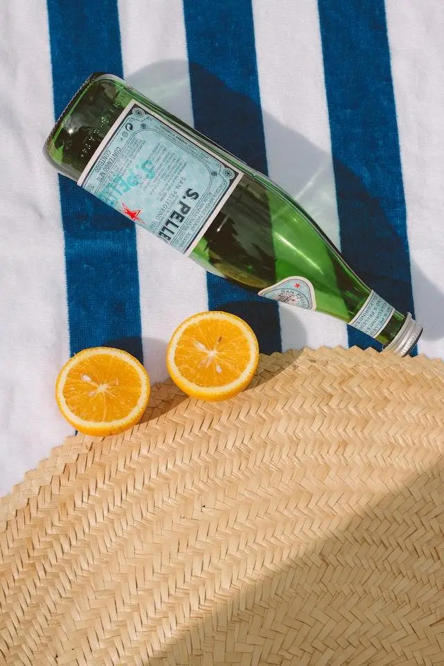
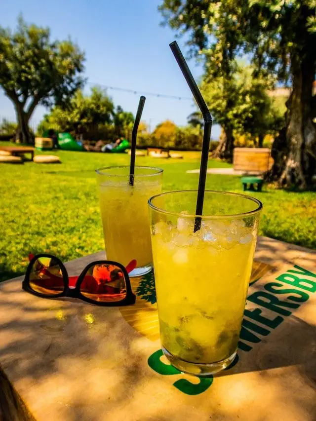

Articles / Recipes
How to make German Radler Beer
2022-09-23 · News, Recipes
Original public content from Yen Chuan. Product claims and specifications remain subject to confirmation by the company.
Have you heard about Radler Beer? Thanks to its unique refreshing taste, this drink is a popular thirst-quencher especially during summer – You can often find cans or bottles of Radler Beer in supermarkets or grovery stores!
Want to learn more about its origins, or want to mix up one for yourself? Read on to learn more!

What is Radler Beer?
Where does the name “Radler Beer” come from? Stemming from the Bayerish word “Radler” (meaning “cyclist”), this classic German beverage was invented to cater to bicyclists worn out by the summer heat.
Apparently a new bike trail opened in Germany in 1922, attracting thousands of cyclists to visit a local pub along the trail.
The pub owner realized that he didn’t have enough stock to supply everyone, until inspiration struck – he mixed sparkling lemonade with beer and served it as “Radler Beer”, which turned out to be a hit!
And the drink took off from there! It soon became the epic Bavarian low-alcohol thirst-quencher, popular for hot summer days!
What’s so great about it?
Made from one-half beer and one-half sparkling lemonade, this refreshing, bubbly, citrusy beer cocktail is perfect for sizzling hot days. The flavor is a crisp mix of sweet and tart, with a touch of bitterness and a citrusy undertone for balance.
This Radler recipe is perfect when you want a lower-calorie, low-alcohol boozy fix.!
Want to give it a try? Follow our simple instructions:

How To make Radler Beer
The epic Bavarian low alcohol thirst quencher for hot summer days!
What you’ll need
How to make
Fill glass with 200ml sprite or 7-up
Pour in lemon syrup
Top with 300ml of beer, stir well and drop some ice cubes to serve
For best results, make sure your ingredients are sufficiently chilled beforehand.
Now it’s your turn!
Try adding this classic combination to the menu for your next gathering, whether it’s a weekend brunch, summer barbeque, or to just sip in your own backyard!